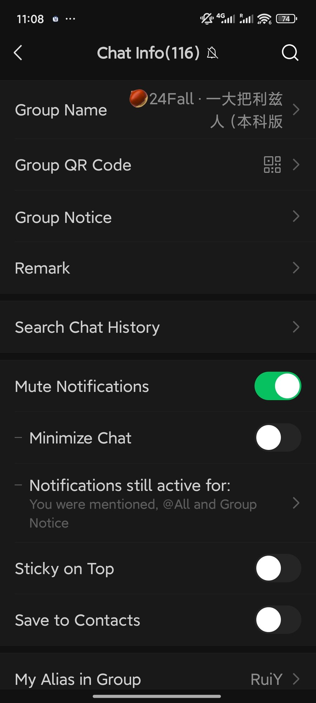

I was the one who suggested we use WeChat.
Not because it was the obvious choice. We thought about Douyin, Snapchat, Xiaohongshu — all the usual suspects were on the table. I picked it because I thought it would be fun. I already knew the app. I knew the secondhand group. I thought: let's throw in a few people who've never touched it and see what happens. What I didn't expect was that their confusion would teach me so much about a space I thought I already understood.
We're four girls in Leeds. Different majors, different backgrounds — two British, two Chinese. None of us knew each other before the workshop. We joined the secondhand group the same way most people do: through a chain of invites, one contact leading to another, no formal introduction. Within minutes, all four of us were in the same group chat, scrolling through posts — a gaming keyboard (Logitech G PRO X TKL), a second-hand MacBook, a gym membership card someone no longer needed, earphones still in the box, a washing machine, and someone desperately asking if anyone had spotted a lost wallet near the library.
Reading the space before reading the posts
Before we even got to the listings, the group itself was already communicating something. The name alone: 🍊24Fall · 一大把利兹人（本科版） — "24Fall · A bunch of Leeds people (undergrad version)". That orange emoji isn't decoration. It signals warmth, informality, a shared cohort identity. The "24Fall" marks time — the intake year. "本科版" (undergrad version) implies other versions exist, that this group knows its own boundaries. All of that semiotic work happens in a single line of text, before anyone has posted anything.
↕ scroll to explore

Group info — 116 members, mute on
↕ scroll to explore
The chat — listings, lost items, code-switching
Then there's the mute. I had notifications silenced — which tells its own story. This is a space I inhabit on my own terms, dipping in when I choose rather than being pulled in by alerts. The group has 116 members. If every post triggered a notification, it would be unusable. Muting is not disengagement; it's how you stay in a high-volume space without being consumed by it. It's a mediated choice — the platform gives you the toggle, and the toggle reshapes your relationship to the whole group.
Looking at the chat itself, the semiotic signs pile up fast. Posts mix Chinese and English without explanation: "出二手台式主机 3050 i5 有意私" ("Selling second-hand desktop PC 3050 i5, DM if interested") sits next to someone asking if anyone saw a wallet at "Primark 或者玛莎" (Primark or M&S). The code-switching isn't accidental — it maps onto the community's bilingual reality. Brand names stay in English because that's what they are. Everything else defaults to Chinese because that's the shared language of the group.
Four reactions, one app
The reactions were immediate and completely different.
The two British girls noticed the volume first. The chat moved fast — several posts per hour, few replies, no timestamps showing who was online. "How do you even know when someone's actually there?" one of them asked. I didn't have a good answer. You just... don't. You post, and you wait. Before she pointed it out, that uncertainty never really bothered me.
"How do you even know when someone's actually there?"
First thing noticed: missing signals. No read receipts, no typing indicator, no online status — features they expected from other apps, absent here.
"It feels like a marketplace, not a chat."
First thing noticed: the tone. Transactional by default. Photo, condition, price — a format so consistent it functions as an unwritten genre.
The other Chinese girl in our group was quiet for a moment, then said something I keep thinking about: "It feels like a marketplace, not a chat." She was right. The tone is transactional by default. Not unfriendly — just efficient. Photos, condition, price. If you want to negotiate, you move to DMs. The group chat isn't for talking. It's for posting.
And me — I was just sitting there, realising how completely I'd absorbed all these norms. They'd become invisible to me. I never noticed the format until someone broke it. I never noticed the lack of read receipts until someone asked where they were. I never noticed how fast sellers replied until we started talking about why they had to.
The rule nobody wrote down
Another thing that surprised all four of us equally was the rule about advertisers. The group has almost no written rules. No pinned message, no announcement listing expectations. But one thing happens consistently, almost automatically: if someone posts something that looks like a commercial promotion rather than a personal sale, they get removed. Not after a vote. Not after a discussion. Just quietly and quickly — gone.
We sat with that for a while. No one decided that rule. No one wrote it down. But everyone knows it, and everyone enforces it. The group, through nothing but use, developed its own sense of what it's for and what it's not for. Holliday (1999) calls this a small culture: norms that belong to the group, not the platform — emerging entirely through participation.
That's the thing about digital spaces. You think you're just downloading an app. Really, you're agreeing to a whole set of norms you haven't even read yet.
Comments